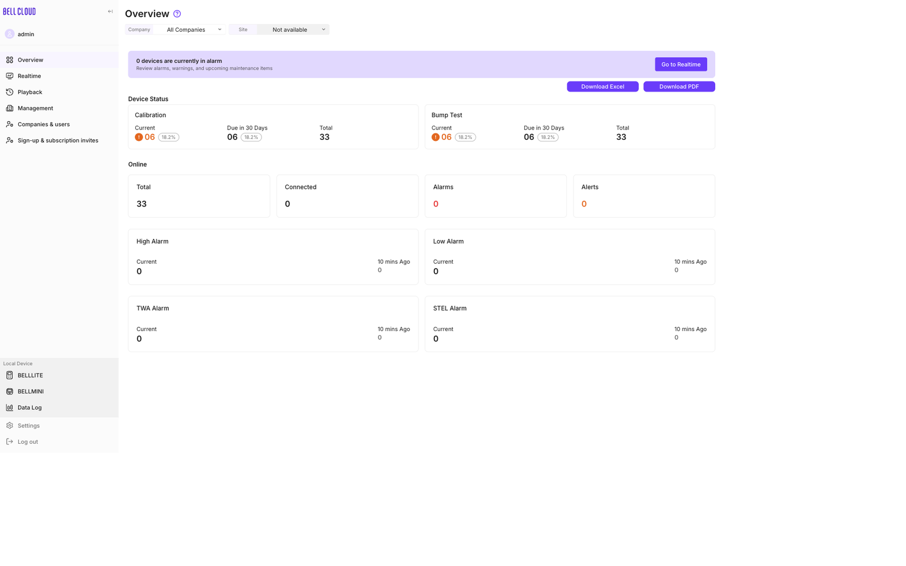
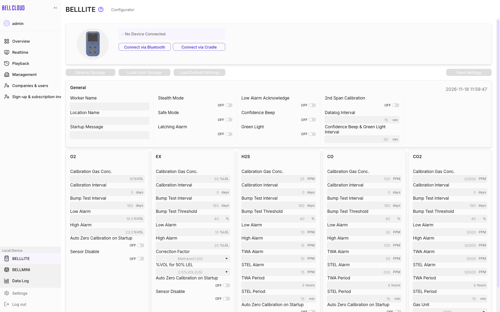
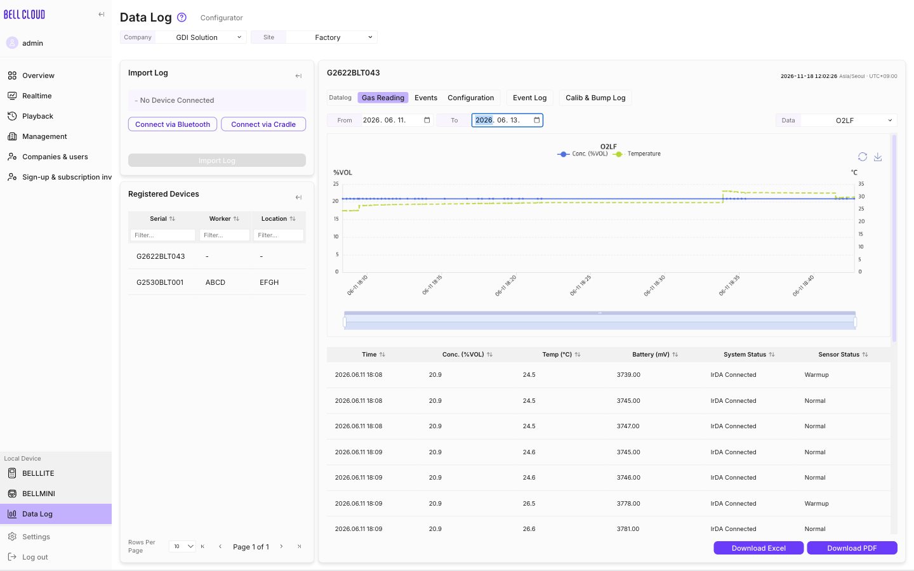
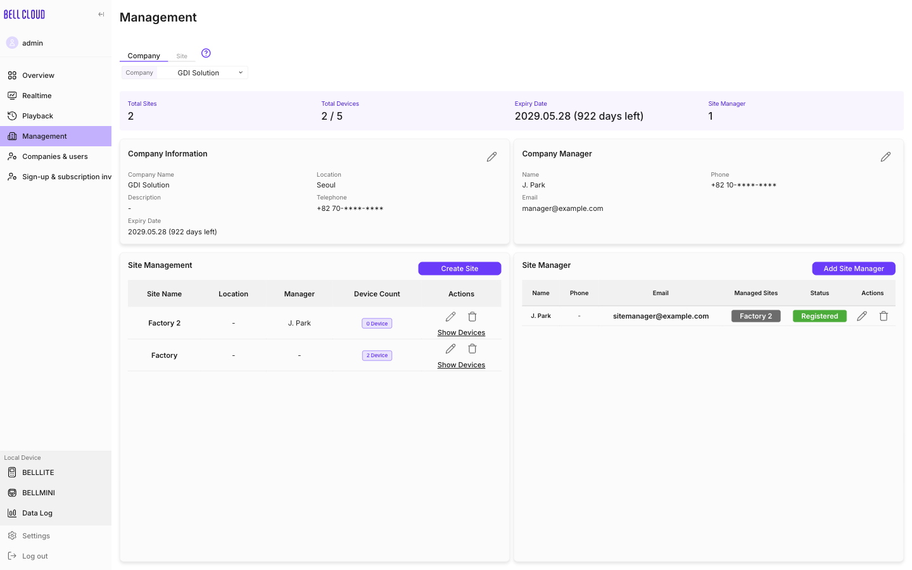

Frontend
React 19 SPA on Vite. 10 Zustand stores, TanStack Query for everything server-owned, Emotion for styling, ECharts for gas-concentration plots. PWA with a hand-written service worker.
Industrial IoT · Full-stack · 2026
BellCloud monitors fleets of BellLite and BellMini gas detectors — the instruments workers carry into confined spaces and refineries. It does three jobs that pull in opposite directions: stream live readings to a dashboard, pull months of on-device binary logs over Bluetooth and a serial cradle, and let a technician calibrate a detector from a browser tab with no server in the path.
I built and operate the whole thing — React SPA, NestJS API, Postgres schema, the binary protocol codec shared by both, and the CI/CD that ships it. This page walks through the engineering decisions that were actually difficult, including the ones that are still unresolved. See the product first →
01 — The Product
Four screens from the running production system. Each one is the visible end of a problem described later on this page — so where a capture shows something structural, the caption says which section explains it.
Personal names, emails and phone numbers are replaced with placeholders. Everything else — device counts, serials, calibration figures, sensor readings — is live production data from our own tenant.

Every tile here comes from a different freshness tier. Calibration and bump-test counts (6 of 33 due, 18.2%) are static-tier data cached five minutes; the high/low/TWA/STEL tiles are live-tier, recomputed per request on a five-second poll. The "10 mins ago" column beside each alarm count is the semi-live tier. One screen, three cache policies — which is the whole reason that section exists.

Connect via Bluetooth and Connect via Cradle are Web Bluetooth and Web Serial;
writing these settings encodes a packet in the browser and sends it straight to the detector.
The five sensor columns are also the reason the database splits lite_* from
mini_* — BellLite carries up to five sensors with independent alarm thresholds,
BellMini carries one.

Oxygen holding at 20.9 %VOL with temperature dashed on the right axis. The table underneath is the pipeline's output: each row was a fixed-width binary record inside a chunk of raw bytes the device streamed over the cradle, carrying its own battery voltage and decoded sensor-status flags. The Import Log panel on the left is where that transfer starts.

A company, its sites, and site managers with explicitly assigned sites — the join table that decides which devices a SiteManager can see at all. 2 / 5 is the device cap enforced against the subscription, and 922 days left is the expiry the nightly scheduler watches: expire, grace period, then cascade delete.
Not shown: the realtime map. It renders only devices currently transmitting, and no detector was powered on when these were captured — so the honest capture is an empty one. Device-offline detection is covered in §07; the map itself plots the live positions that arrive with each packet.
02 — Architecture
A detector reaches the platform two ways, and conflating them was the first design mistake I had to avoid. Live readings arrive through a phone acting as a relay. Historical logs are pulled directly by a browser over BLE or a USB cradle, with no server involved in the transfer.
POST /api/bellconnect/packet → API-key guard → parse → Postgres + Redis heartbeat
POST /api/device/lite-log/chunk/batch → raw bytes staged → parsed
Path B's codec runs entirely in the browser. That has a consequence worth stating because it cost me real debugging time: wire packets never appear in server logs. When a technician reports "the download failed", there is nothing server-side to grep — which is why that layer ended up being the only part of the frontend with a real unit-test suite (§04).
React 19 SPA on Vite. 10 Zustand stores, TanStack Query for everything server-owned, Emotion for styling, ECharts for gas-concentration plots. PWA with a hand-written service worker.
NestJS 11, 16 modules, global prefix /api. Prisma over PostgreSQL, Redis for heartbeats and cache, Firebase Admin for push, two cron jobs.
Yarn 4 workspaces. The protocol definitions, device types, RBAC role table and i18n resources are packages consumed by both apps — one source of truth per concept.
03 — Device Protocol
Two detector families, each with ~8 command classes and its own field layout per function. Writing an encoder per function would have meant hundreds of hand-rolled byte-offset functions — and every firmware revision would touch dozens of them.
Instead each function declares its payload as a table of typed parameters, and one generic codec walks the table in both directions. Adding a firmware function is a data edit.
// packages/protocols/mini/fn_monitoring.ts — 0x02 response
0x02: [
{ name: 'system_status', type: 'u16', bytes: 2 },
{ name: 'timestamp', type: 'u32', bytes: 4, format: 'date_seconds_from_basedate' },
{ name: 'temperature', type: 's16', bytes: 2, format: 'temperature' },
{ name: 'gas_conc', type: 's32', bytes: 4, format: 'gas_concentration' },
/* … */
]
Decoding is a two-stage pipeline — wire type (bytes ↔ integer) then
format (integer ↔ domain value). Keeping them separate means
u32 arithmetic is written once while 54 format handlers deal with the messy
domain semantics: gas concentration scaled by 1000, temperature by 10, LEL sensor voltage as
(100 + raw) × 10 mV, bitfield enums, fixed-length arrays, MAC addresses.
| Layer | Scale | Notes |
|---|---|---|
| Function definitions | 91 | BellLite 50 + BellMini 41, keyed by (classId, functionId) |
| Parameter definitions | 295 | Declarative; no per-function encoder code |
| Format handlers | 54 | Shared by browser codec and backend parsers |
| Frame | — | SOF 0x3C · dst · src · seq · class · fn · len16 · payload · CRC16 · EOF 0x3E |
| CRC-16 | 0x8005 | MSB-first, init 0x0000 — one implementation, three call sites |
Firmware reports time as seconds since 2023-01-01 00:00:00 UTC. Three
independent code paths convert it: the browser codec, the live-ingest service, and five backend log
parsers. Had any one of them assumed KST — the obvious guess on a Korean product with
TZ=Asia/Seoul servers — its timestamps would be silently off by nine hours with nothing
failing loudly.
So the epoch is a single exported constant with a comment naming all three consumers and an explicit prohibition on redefining it locally. Boring, but it is the kind of constant that is worth being loud about.
04 — Browser ↔ Device
Web Bluetooth delivers bytes as GATT notifications. Web Serial delivers them from a read loop. Above that difference, the detector protocol is identical — so the difference is isolated in two adapter implementations and nothing above them knows which transport is live.
gattserverdisconnected handling on one side, port read loop on the other.num_packets, switch to streaming, receive N chunks, merge, return to single.The detector starts firing burst packets immediately after the header response — before the host finishes switching to streaming mode. Discarding the single-mode buffer on transition therefore dropped the leading chunk every time.
Fix: when no reader is waiting, preserve the buffer and drain it into the stream queue on transition instead of clearing it.
Aborting a download means sending a stop command — but a frame arriving mid-write consumed the pending resolver, so the next read failed. And building the stop packet at cancel time was too late: the burst had already flooded the link.
Fix: pre-build and cache the stop packet when entering burst, abort before sending it, then re-arm the pending resolver. Retries 3×, 500 ms apart.
BLE hands over ~20 bytes at a time, so a frame spans several callbacks — and a payload byte can
legitimately equal 0x3C, the start-of-frame marker.
A ring buffer (8 MB, power-of-two masking) feeds a parser that extracts CRC-validated frames and, on desync, advances one byte at a time to resynchronise rather than discarding the buffer.
Framing, mode transitions and cancellation are deterministic given a byte stream — so each of those bugs became a test case. 69 cases cover split frames, CRC mismatch recovery, embedded SOF bytes, abort signals and the stop-command race.
Reproducing a race in a test file is dramatically faster than re-running a BLE session and reading browser logs.
05 — Log Ingestion
A detector holds months of readings. Transfer is slow and comes over a link that can drop. The parser has to interpret fixed-width binary records that differ per firmware version. Given that, assuming the parser is correct on the first pass was not a safe bet — so the pipeline is built to be re-run.
*_log_data_info — one row per download request: transfer status, downloaded count, retries, plus separate parse state (parsed, parser_version, device_fw_version)*_log_data_chunk — one row per wire packet, raw bytes preserved verbatim with its CRC, unique on (log_id, chunk_index)*_gas_reading_log, *_event_log, *_calibration_log, … — typed records, idempotent on natural keys
Because stage 2 survives, fixing a parser bug means fixing the parser and re-running it — not asking
a customer to re-download from the device. parser_version on stage 1 records which rows
need that treatment. Once parsed and verified, a purge endpoint reclaims the raw bytes.
Re-running a parse has to be a no-op if the data is already there. Every parsed table carries a natural unique key, so idempotency is enforced by Postgres rather than by application bookkeeping:
| Constraint | Protects against |
|---|---|
(log_id_int, record_index) | Re-parsing the same log file twice |
(serial_number, timestamp) | The same physical sample arriving in two different log files — devices re-send overlapping time windows |
(log_id, chunk_index) | Duplicated or missing wire packets during transfer |
Combined with skipDuplicates on bulk inserts, that second constraint is the one that
matters operationally — it collapses cross-file duplicates at the database level, where they cannot
be missed, instead of in a dedupe routine someone has to remember to call.
lite_gas_reading_log takes one record per sensor per sample, up to five sensors per
device. It is the only table in the schema that departs from the conventions used everywhere else,
and each departure is a deliberate trade:
| Decision | Saving | Cost accepted |
|---|---|---|
FK as BigInt, not UUID |
16 B → 8 B | A dedicated log_id_mapping table exists solely to translate UUID ↔ BigInt; the public API still exposes the non-enumerable UUID |
Five sensors packed into one TEXT column |
~60% | Not queryable per-sensor in SQL; sibling tables keep readable JSON |
| 3 indexes instead of 6–8 | write path | Some read patterns need a scan — accepted on a write-heavy table |
Timestamp(0), second precision |
bytes | Matches the dedupe key granularity, so nothing is lost that was being used |
Bulk insert runs in batches of 5,000 records inside a transaction, with chunk reassembly paged at 100
to bound memory and an explicit GC nudge past 500 MB heap. The parse transaction sets
session_replication_role = 'replica' to skip FK and trigger checks for the duration — a
real bulk-load trade-off, scoped to the transaction and worth naming rather than hiding.
lite_* and mini_* tables are not sharding — they are vertical partitioning
by hardware capability. BellLite carries up to five sensors; BellMini carries one. A single table
would mean four permanently-NULL sensor column groups on every BellMini row. A
devices_unified view puts them back together for the queries that genuinely need both,
and devices itself holds only metadata.
06 — Live Aggregation
The dashboard shows live gas readings next to 30-day alarm history next to device inventory. Polling all of it every five seconds would have meant re-aggregating months of log data on every tick. So each tier gets the latency it actually needs, and the client poll interval is paired with the server cache TTL rather than chosen independently.
| Tier | Endpoint | Client poll | Server cache | Why |
|---|---|---|---|---|
| 1 · Live | /dashboard/live-aggregation |
5 s | none | A gas alarm cannot be stale. Computed per request; reuses the monitoring query rather than re-querying |
| 2 · Semi-live | /dashboard/alarm-history |
60 s | 60 s | Trend data. staleTime 50 s so the client never requests ahead of a cache it would only re-warm |
| 3 · Static | /dashboard/static |
5 min | 300 s | Inventory and calibration-due counts change on human timescales |
Cache keys are scoped by user id and filter, because the result of each query already depends on what that role is permitted to see (§08). A tenant-blind cache key here would have been a data-leak bug, not a performance bug.
Alarm state lives in a bitfield on each monitoring row. A device in alarm keeps reporting every few seconds, so a naive count inflates with packet volume rather than reflecting how many devices are actually in alarm. Prisma cannot express bitwise operators, so this tier uses raw SQL:
SELECT serial_number,
bool_or((system_status & 128) > 0) AS had_low,
bool_or((system_status & 256) > 0) AS had_high,
bool_or((system_status & 4096) > 0) AS had_stel,
bool_or((system_status & 8192) > 0) AS had_twa
FROM lite_monitoring
WHERE created_at > (NOW() AT TIME ZONE 'UTC') - INTERVAL '10 minutes'
AND (system_status & (128|256|4096|8192)) > 0
GROUP BY serial_number
Three things are load-bearing. bool_or grouped by serial means one device counts once per
alarm type regardless of how many packets it sent. Pre-filtering alarm rows in the subquery keeps the
scan narrow. And NOW() AT TIME ZONE 'UTC' rather than bare NOW() makes the
window independent of the server's timezone — which matters because the process runs with
TZ=Asia/Seoul, so bare NOW() would shift the window by nine hours.
Site ids are injected as query parameters, not string-concatenated. Raw SQL earns its place in three narrow cases here — Postgres-only operators, a view Prisma doesn't model, and table names chosen at runtime from the device-type config — and nowhere else.
One bitfield, two layouts. BellLite uses different bit positions on the wire than in
the monitoring table — 16/32/512/1024 versus 128/256/4096/8192 for
low/high/STEL/TWA. The live-ingest path and the aggregation path each read their own layout from the
device-type config table. Mixing them up produces plausible-looking counts that are entirely wrong,
which is exactly the class of bug that survives code review.
07 — Alarm & Push
A detector in alarm reports every few seconds. Pushing on every packet would send hundreds of notifications for one incident. So alarm state per sensor is held in Redis and a push fires only on a transition — one notification when an alarm starts, one when it clears, regardless of how many packets carried it.
"Offline" is the absence of data, which polling detects badly — a sweep either runs too often or finds out too late. Instead each packet refreshes a Redis key with a 120-second TTL, and the server subscribes to keyspace expiry events. The key expiring is the offline event; there is no scan loop.
device:<serial>, TTL 120 s. If it was absent, this is a reconnect → push DEVICE_CONNECTED__keyevent@0__:expired → handler pushes DEVICE_DISCONNECTEDSET NX claim key suppresses the duplicate, since the expiry event and the explicit-disconnect path can both reach the same notificationRecipients are resolved per tenant: the company's managers plus the site's assigned managers, de-duplicated. Global admin roles are excluded by design — a SuperAdmin would otherwise receive every alarm from every customer. Each push is generated per recipient locale, grouping tokens by the language stored alongside them.
FCM tokens carry a 30-day TTL that refreshes on every visit. So a token approaching expiry is a user who has not opened the app in nearly a month. A daily cron picks up tokens with three days left and sends one re-engagement push while the token is still deliverable — turning garbage collection into the only useful moment to reach that user.
Both cron jobs take a Redis SET NX lock before running, so a multi-replica deployment
doesn't send everything twice. The subscription scheduler additionally tracks sent stages in an
integer array on the row, making it idempotent even if the lock is unavailable and the job runs twice.
08 — Auth & Tenancy
Roles are ordered numerically — SuperAdmin 0, Admin 1, CompanyManager 2, SiteManager 3, Guest 4 — so
the entire hierarchy check is userRoleId <= requiredRoleId. One annotation covers a role
and everything above it rather than enumerating every permitted role at every endpoint.
Why the fallback constant is spelled out explicitly. With SuperAdmin at
0, the idiomatic JavaScript fallback role_id || 0 resolves an absent role
to the highest privilege in the system. A missing field would have become privilege
escalation, silently.
So the unknown-role fallback is a named Guest constant with both id and name set together, and the permission resolver returns Guest for anything it doesn't recognise. Fail closed, by construction.
Tenancy is enforced in one place. A single scope service answers "which sites may this user see" — Admin all, CompanyManager their company's, SiteManager those explicitly assigned via a join table, anyone else none — and every consumer (dashboard, monitoring, sites, device ingest) calls it instead of reimplementing the filter. It was consolidated there precisely because four slightly-different copies had drifted.
Access tokens live up to four hours. Revoking a refresh token does nothing to an access token already in someone's hands — so a demoted user would keep their old privileges until it expired.
Each user row carries a session version, stamped into the token as a short sv claim and
checked server-side on every authenticated request. Bumping the column invalidates every outstanding
token for that user instantly. Role changes bump it in the same transaction as the role
update, so there is no window in which the new role and the old tokens coexist.
The honest cost: one indexed read per authenticated request, with no cache in front of it. That is a deliberate choice of correctness over latency, and the check is enforced on both the HTTP guard and the Passport strategy so the two paths cannot drift apart.
Refresh tokens are 32 random bytes, stored only as a SHA-256 hash, single-use and rotated on every refresh — the old row is revoked as the new one is issued. Remember-me is carried forward through rotation so a refresh doesn't silently shorten a 7-day session to 24 hours.
Four separate checks: you cannot change your own role, cannot grant a role above your own, cannot modify a user ranked above you, and cannot grant Admin through this path at all — company ownership is a NOT NULL foreign key whose reassignment would cascade into sites and devices.
17 permission flags × 5 roles form one matrix. The sidebar filter and the route guards read the same store, so a hidden menu item is also blocked when its URL is typed directly. Parent menus disappear when every child is filtered out.
Browser-direct configurator pages are hidden when Web Serial and Web Bluetooth are unavailable — a feature-detection axis kept independent of permissions, since "not allowed" and "not possible" are different answers and conflating them produces a dead menu item.
09 — Operations
Both environments run on a single EC2 instance — 6 containers, separated three ways: distinct
container names, distinct host ports, and a separate Compose project so networks and volumes never
collide. Every port binds to 127.0.0.1 only; the host Nginx is the sole route in.
Environments share one RDS instance and are separated by PostgreSQL schema rather than by instance.
| Service | Production | Port | Staging | Port |
|---|---|---|---|---|
| Frontend (Nginx) | bellcloud-frontend | 8082 | …-frontend-dev | 8080 |
| Backend (NestJS) | bellcloud-backend | 8000 | …-backend-dev | 8001 |
| Redis | bellcloud-redis | 6379 | …-redis-dev | 6380 |
The container entrypoint runs prisma migrate deploy && node main.js, so a failed
migration means the container never starts — far better than an app running happily against the wrong
schema. The deploy script then copies the freshly-shipped migration files into the running container
and applies them again. Being idempotent, the second pass is free; it exists so a migration can land
without waiting on an image rebuild, and so the authoritative copy is the one from CI rather than
whatever was baked into a cached layer.
Three workflows. verify builds both apps on PRs to block broken images. deploy
builds and pushes to GHCR, then ships over SSH — branch chooses the image tag, env file, Compose
file and deploy script through expressions rather than duplicated workflows.
release turns a v* tag into categorised release notes from conventional
commit prefixes.
Vite env vars are baked in as build args, since a built SPA cannot read runtime environment.
Deliberately: staging deploys retry up three times with a prune between attempts,
report disk space before and after cleanup, then health-check the API for up to 60 seconds and
verify the frontend responds — collecting failures into a numbered summary.
It is where a deploy is allowed to fail loudly, so it is where the diagnostics live.
14 categorised log streams with tiered retention — 30 days for routine traffic, 60 for FCM and email,
90 for errors and security — rotated hourly and gzipped. Reaching them through
docker exec and zcat by hand is tedious enough that nobody does it under
pressure, so it is a deployed CLI instead:
# environment, category, lines — order-free; -f follow, -s search
belllog prod error 50
belllog dev bellconnect -f
belllog prod auth -s "invalid token"
The parts that make it more than a tail wrapper are all lessons from being burned:
it probes which log directory actually exists rather than hardcoding a path that
breaks on environment drift; it pairs cat/grep with
zcat/zgrep so rotated archives stay searchable; it filters out the literal
%DATE% directory the rotation library leaves behind; and it
redacts bearer tokens and cookies on display, so output can be pasted into a ticket
safely. CI reinstalls it on every deploy, so it can never go stale against the code it inspects.
The nine-hour trap. The host runs UTC; the backend container runs
TZ=Asia/Seoul. Application log filenames are therefore KST while the host's
date is UTC — so building a filename on the host fetches logs from nine hours ago, by
which time that file has been gzipped and even tail fails.
Correlating an application log with an Nginx log means applying the correction deliberately. This is documented as an operational rule rather than left for the next person to rediscover at 2 a.m.
10 — Post-Mortem
Production was writing debug-level logs. The fix took two attempts, and the second attempt is the part worth keeping.
A single environment variable decided both the log directory and the log level. The level
check compared against 'prod' only, so with DEPLOY_ENV=production the
path resolved correctly while the level fell through to the most verbose setting.
The diagnostic lesson: path and level had to be checked separately. The directory looked right, which is exactly why the level went unexamined.
Verified by measurement, not inspection — debug entries in the production log went from 229 to 0.
The first fix was editing the env file on the server. It worked, and vanished on the next deploy, which overwrites that file from a secret every time.
Worse: deploy was not shipping the Compose file at all, so the server's copy had been frozen at a week-old version. The repository already held correct values that had no path to production.
Structural fix: ship the Compose file and the log tool on every deploy, hardcode the environment markers into Compose rather than leaving them to a secret-managed env file, and mount log directories to the host so they survive container recreation.
A configuration edit made on a server is not a fix — it is a fix with a deploy-shaped expiry date. If the repository is the source of truth, then every file the runtime depends on has to travel with the deploy, including the ones nobody thinks of as code.
11 — Scope & Limits
A portfolio that only lists wins is not useful for judging engineering. These are the gaps I would raise myself in a review.
| Area | Status |
|---|---|
| BLE burst log download | Unresolved. Serial cradle transfers complete reliably; BLE burst has never completed — every attempt stalls on an unchanging stream read. Root cause not yet isolated between host-side framing and firmware burst support. Documented rather than papered over, since the host-side logic is shared and known-good on the serial path. |
| Burst reception rate | Even on the cradle, reception is not 100% — a missing-chunk re-request pass is what makes transfers succeed. It works, but it is a mitigation, not a fix. |
| Test coverage | 130 unit tests, concentrated where determinism pays off: 69 on protocol framing and transfer logic, 61 on backend auth and ingest services. No component, hook or page tests; no E2E; no coverage gate in CI. CI builds both apps but does not run the suite — a real gap. |
| Realtime transport | HTTP polling plus FCM push, not WebSockets. Fine at current fleet size; polling is the first thing I would replace as device count grows. |
| Deploy strategy |
down then up — a short downtime window and no automatic rollback.
Acceptable for this product's usage pattern; blue-green is the obvious next step.
|
| Log volume | Docker's json-file driver has no size cap configured, so container stdout grows unbounded. Identified with the fix specified; not yet applied. |
| Log table growth | No partitioning and no retention job on the reading tables. The per-row optimisations buy headroom; time-based partitioning on the timestamp column is the planned next step, and the existing index design is compatible with it. |
| Rate limiting / APM | Neither is in place. Observability is structured log files plus latency markers routed to a performance stream above a 1-second threshold. |
BellCloud is commercial software and its repository is private, so this page describes architecture and engineering decisions rather than linking source. Hostnames, credentials, customer names and infrastructure addresses are deliberately omitted. Every figure quoted above is measured from the codebase rather than estimated.